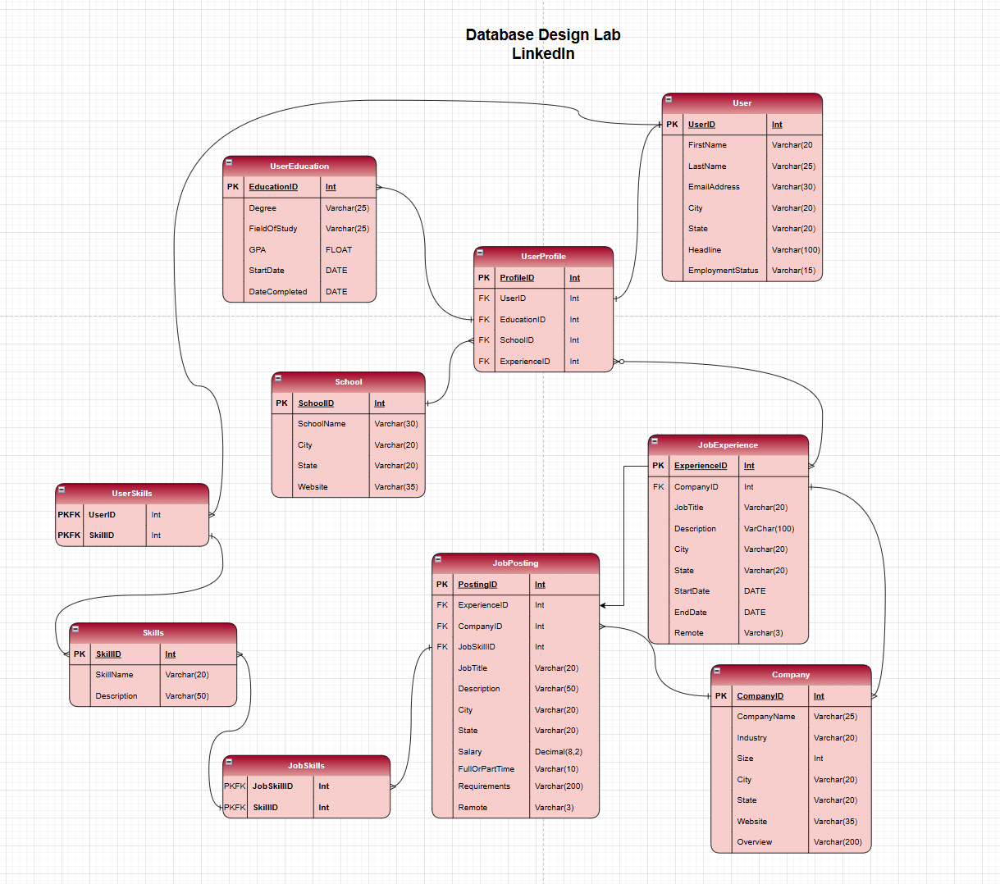
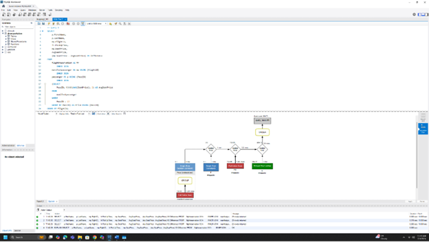
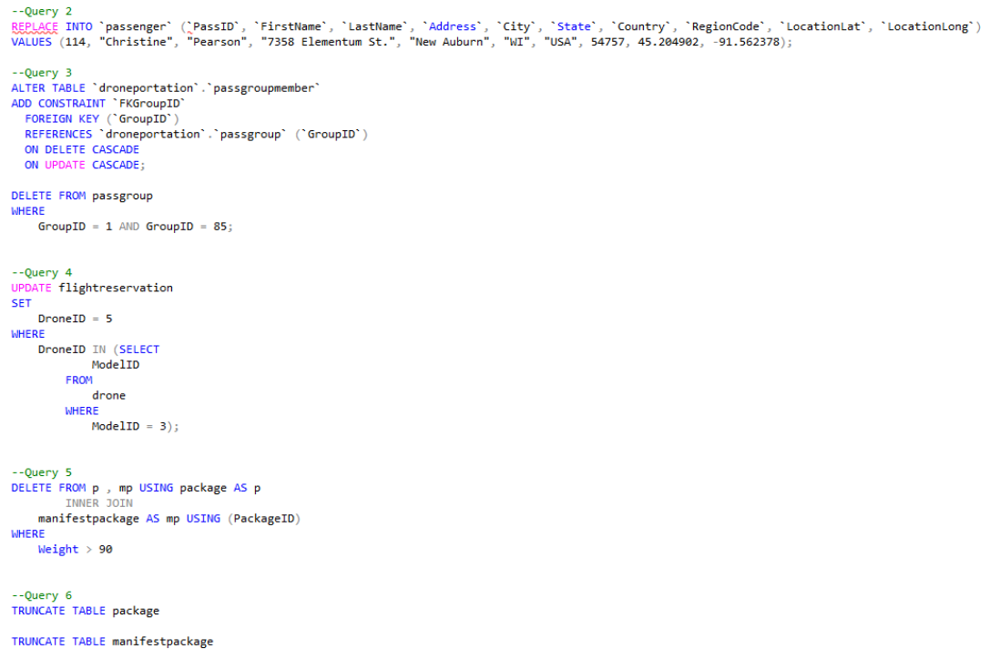

This course builds on the foundations of Database 1, advancing from basic retrieval to the management, design, and optimization of relational database systems. Key focuses included requirements analysis, formal ERD creation, data normalization to 3NF, and managing DBMS environments through advanced SQL scripts.
Explored the history and components of database technologies while converting data models into functional relational databases with linked tables.
Created nested queries and multi-table joins using various methods to handle complex data retrieval requirements.
Practiced the transformation of ERDs into relational models while strictly following industry-standard normalization rules.
Identifying the primary phases of database design and using modeling tools to plan the structure of a new database.

Utilized a Visual Explain Plan in MySQL Workbench to analyze query performance and execution paths.

Using REPLACE and UPDATE statements to alter and maintain tables within a database environment.

← Return to Academics